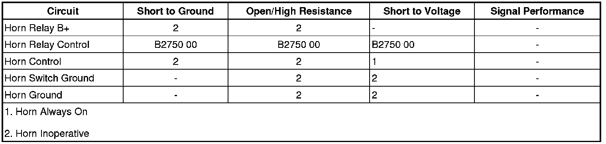

B2750
DTC B2750
Diagnostic Instructions
* Perform the Diagnostic System Check - Vehicle (Initial Inspection and Diagnostic Overview) prior to using this diagnostic procedure.
* Review Strategy Based Diagnosis (Initial Inspection and Diagnostic Overview) for an overview of the diagnostic approach.
* Diagnostic Procedure Instructions (Initial Inspection and Diagnostic Overview) provides an overview of each diagnostic category.
DTC Descriptor
DTC B2750 00
- Horn Relay Coil Circuit
Diagnostic Fault Information

Circuit/System Description
The body control module (BCM) controls the horn relay by grounding the control circuit of the horn relay coil energizing the relay. When the horn relay is energized, the horn relay contacts close applying voltage through the horn fuse and the horn control circuit to the horns.
Conditions for Running the DTC
The DTC can only set only when the output is actively being requested by the BCM.
Conditions for Setting the DTC
The BCM detects a short to ground, open, or short to voltage in the horn relay control circuit for approximately 125 milliseconds.
Action Taken When the DTC Sets
The BCM disables the output to the horn relay until the next ignition cycle.
Conditions for Clearing the DTC
* The DTC clears when the fault is no longer detected.
* The current DTC will become history when the request for the output is removed.
* The history DTC will clear after 50 consecutive fault-free ignition cycles have occurred.
Reference Information
Schematic Reference
Horn Schematics ([1][2]Electrical Diagrams)
Connector End View Reference
Component Connector End Views (Connector Views)
Description and Operation
Horns System Description and Operation (Description and Operation)
Electrical Information Reference
* Circuit Testing (Component Tests and General Diagnostics)
* Connector Repairs (Component Tests and General Diagnostics)
* Testing for Intermittent Conditions and Poor Connections (Component Tests and General Diagnostics)
* Wiring Repairs (Component Tests and General Diagnostics)
Scan Tool Reference
Control Module References (Programming and Relearning) for scan tool information
Circuit/System Verification
Command the horns ON and OFF with the scan tool. The horns should turn ON and OFF when changing between the commanded states.
Circuit/System Testing
1. Ignition OFF, disconnect the HORN relay.
2. Ignition ON, verify a test lamp illuminates between the B+ circuit terminal 86 and ground.
• If the test lamp does not illuminate, test the B+ circuit for an open/high resistance. If the circuit fuse is open, test the horn assembly control circuit terminal 87 for a short to ground. If all circuits test normal, test or replace the HORN relay.
3. Connect a test lamp between the horn relay control circuit terminal 88 and the B+ circuit terminal 86.
4. Command the horns ON and OFF with a scan tool. The test lamp should turn ON and OFF when changing between the commanded states.
• If the test lamp is always OFF, test the horn relay control circuit for a short to voltage or an open/high resistance. If the circuit tests normal, replace the BCM.
• If the test lamp is always ON, test the horn relay control circuit for a short to ground. If the circuit tests normal, replace the BCM
5. If all circuits test normal, test or replace the HORN relay.
Component Testing
1. Ignition OFF, disconnect the HORN relay.
2. Test for 60-180 ohms between terminals 85 and 86.
• If not within the specified range, replace the relay.
3. Test for infinite resistance between the following terminals:
* 30 and 86
* 30 and 87
* 30 and 85
* 85 and 87
• If not the specified value, replace the relay.
4. Install a 30-amp fused jumper wire between relay terminal 85 and 12 volts. Install a jumper wire between relay terminal 86 and ground. Test for less than 2 ohms between terminals 30 and 87.
• If greater than the specified range, replace the relay.
Repair Instructions
Perform the Diagnostic Repair Verification (Verification Tests) after completing the diagnostic procedure.
* Relay Replacement (Attached to Wire Harness) (Relay Replacement (Attached to Wire Harness))Relay Replacement (Within an Electrical Center) (Relay Replacement (Within an Electrical Center))
* Control Module References (Programming and Relearning) for BCM replacement, setup, and programming